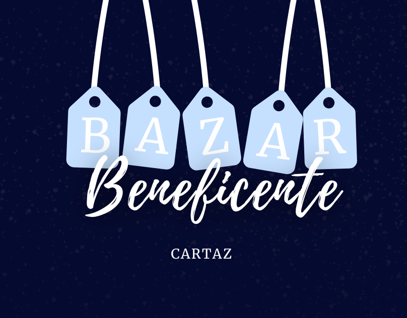

Localizada na Vila Verde da cidade o Bazar beneficiario junto com o Colegio Rodolpho e entre outros colegios traz para os alunos o que há de melhor desde roupas e sapatos. Fundada em 2020, a comunidade de voluntarios já é destaque e conquista a comunidade a cada dia.
Nossa missão é: "Proporcionar agassalhos usados mas bem cuidado, oferecer uniformes e tudo demais".
Oferecemos profissionais experientes do Colegio ao seu atendimento em caso de duvidas. O atendimento possui padrão de excelência e agilidade, garantindo qualidade e satisfação dos nossos queridos nalunos.
A falta de uniformes no Colégio Rodolpho tem sido uma questão de debate entre os estudantes, pais e a própria instituição. Sem uniformes, os alunos têm a liberdade de escolher suas roupas diariamente, o que pode resultar em uma desorganização visual na escola. Além disso, a ausência de um padrão visual pode dificultar a identificação dos estudantes, tanto por parte dos professores quanto por outros membros da comunidade escolar. A distribuiçao de uniformes no Colégio Rodolpho poderia trazer benefícios, como promover a igualdade entre os alunos, facilitar a identificação e criar um senso de pertencimento à escola.
O Colegio Rodolpho Zaninelli agradece pela sua ajuda!